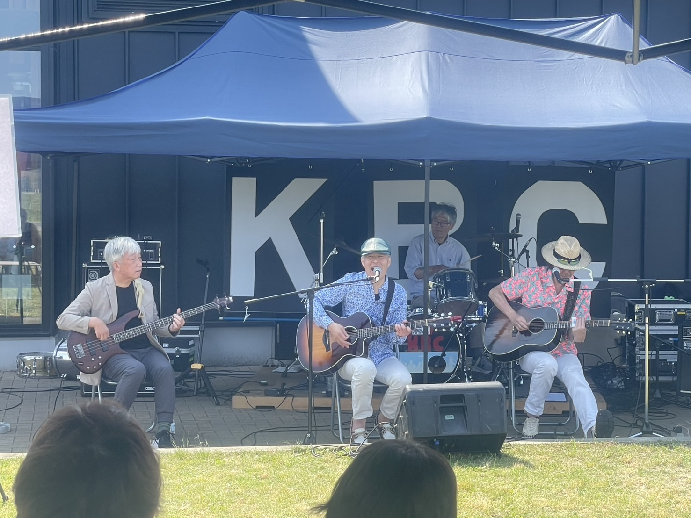
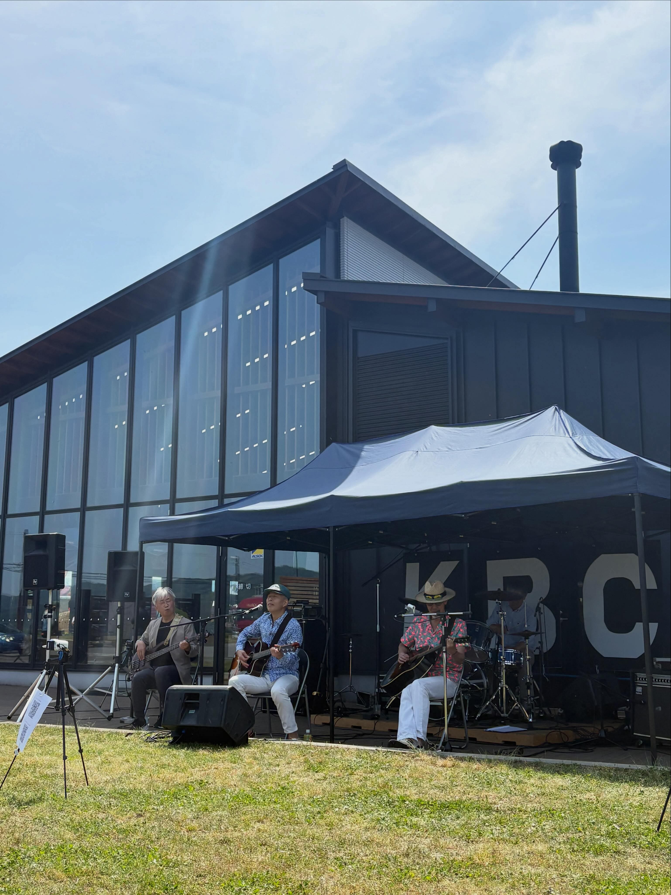

2026.05.17
角田道の駅
宮城県角田市枝野北島81−１

急きょ決まった角田道の駅でのライブ。晴天に恵まれ、多くの方々に足を運んでいただきました。J’ｚでのライブ以来ということで、気合も入りまくりです。お客様の笑顔が見られていい気分で演奏ができました。バンド結成以来、初となる「ギターtanによる演奏短縮」という不思議な事件もあり、Ｂ．ｍｕｍｐｓらしいライブとなりました。
＜セットリスト＞
１．当たれ！宝くじ
２．Stay with you forever
３．たくわん
４．sweet memories
５．恋の季節
６．伊勢佐木町ブルース
演奏後はもちろん ぱぴハウスのピザをいただきました。やっぱりおいしいものは欠かせません。
